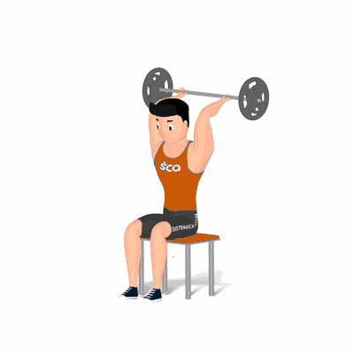

Tríceps Francês Barra Livre

Exercício para fortalecimento e hipertrofia dos músculos tríceps, com enfoque o tríceps braquial.
Ficha Técnica
Tipo: Musculação
Grupo Muscular: Tríceps
Aparelho: Nenhum
Músculos: Nenhum
Como realizar
- Sente em um banco, segure uma barra em W;
- Manter as costas apoiadas no encosto e glúteos bem estabilizados;
- Suba a barra sobre a cabeça estendendo os cotovelos e apontando-os para frente;
- Posicione a barra na mesma linha dos ombros, essa é a posição inicial do exercício;
- Desça a barra para trás da cabeça realizando a flexão dos cotovelos e retorne à posição inicial;
- Durante a execução, manter os ombros e braços imóveis;
- Repita os movimentos, conforme o número de repetições orientado pelo professor.
 RC STORE
RC STORE